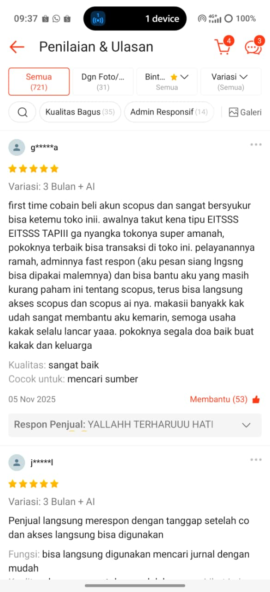
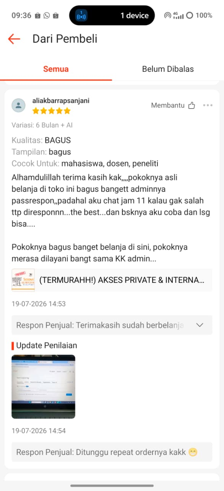
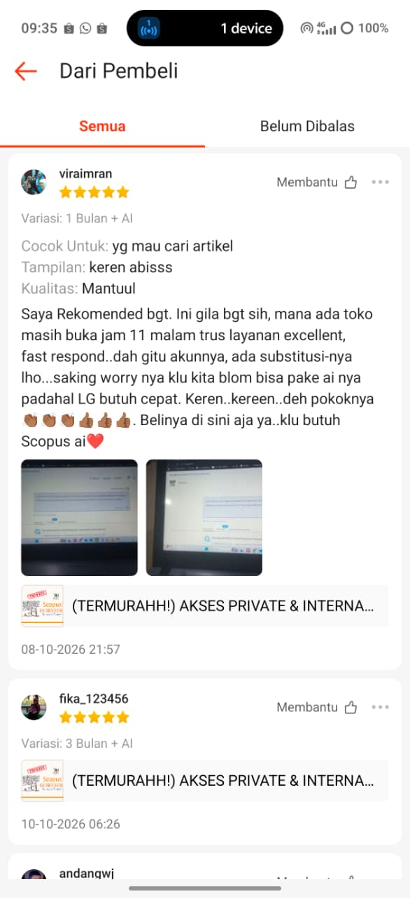

Dosen
Sedang mengejar jabatan fungsional
Butuh referensi terindeks yang bisa dipertanggungjawabkan untuk berkas kenaikan pangkat.
Akun Scopus berlisensi atas nama Bapak/Ibu sendiri. Login kapan saja, buka full text, unduh PDF-nya — tanpa antre, tanpa patungan.
Digital literacy interventions in higher education: a systematic review
Rahman, A. · Putri, S. · Yusuf, M.
Abstract
doi:10.1016/j.jaet.2024.0142 · cited by 148
§ 01 — Masalah
Tanpa akses
Dengan akun sendiri
§ 02 — Definisi
Akun Scopus berlisensi adalah akses pribadi ke salah satu database jurnal ilmiah terbesar di dunia — cari, baca, dan unduh full text jurnal terindeks Q1–Q4 atas nama sendiri.
Waktu yang tadinya habis untuk mencari, kini terpakai untuk menulis.
Menyusuri literatur lebih cepat. Temukan insight penelitian tanpa membaca satu per satu dari nol.
Memperkuat setiap argumen dengan artikel dan publikasi ilmiah full text untuk kajian pustaka.
Referensi klinis terpercaya untuk kebutuhan akademik maupun praktik profesional.
§ 03 — Bukti
Dari dosen dan peneliti yang sudah satu sampai dua bulan memakai aksesnya.
“Pokoknya TERBAIK, aku pasti bakal pakai lagi kalo ada project penelitian lagi.”



§ 04 — Harga
Langganan Scopus satu institusi berharga miliaran rupiah per tahun. Akses yang sama untuk Bapak/Ibu sendiri mulai Rp50.000. Semua paket full garansi.
Akses pribadi scopus.com · unduh full-text Q1–Q4 · ekspor sitasi & metadata
Semua isi paket 1 bulan · bonus 1 bulan · cukup untuk menuntaskan satu bab
Semua isi paket 3 + 1 bulan · cukup untuk satu siklus penulisan artikel
Semua isi paket 6 + 2 bulan · bonus 3 bulan, cukup sampai sidang
Semua isi paket 12 + 3 bulan · include ScienceDirect, ClinicalKey & SciVal · lebih banyak artikel ter-unlock · tanpa perpanjangan
Promo lifetime berdua / bertiga
Setiap akun mendapat semua isi Paket Lifetime, termasuk ScienceDirect, ClinicalKey & SciVal. Full garansi.
* Bonus pendaftaran hari ini: ebook “Cara Cepat Mencari Referensi Scopus”, dikirim bersama detail akun.
§ 05 — Untuk siapa
Dosen
Butuh referensi terindeks yang bisa dipertanggungjawabkan untuk berkas kenaikan pangkat.
Mahasiswa akhir
Perlu full text, bukan abstrak, supaya kajian pustaka benar-benar berdasar.
Peneliti
Menyiapkan naskah untuk jurnal Q1–Q2 dan butuh state of the art yang mutakhir.
§ 06 — Manfaat
Jutaan jurnal dan artikel, tanpa batasan unduhan.
Semua jurnal terindeks Scopus — bebas jurnal predator.
Tidak perlu mencari satu per satu atau berhenti di link mati.
Referensi berkualitas membuat naskah lebih mudah diterima reviewer.
Dari kajian pustaka sampai submit, semuanya lebih lancar.
§ 07 — Tanya
Pertanyaan yang paling sering masuk. Jawabannya: bisa, semuanya.
Bisa. Login sendiri, tidak berebut giliran dengan pengguna lain.
Bisa. Metadata dapat diekspor dalam format CSV atau RIS untuk analisis bibliometrik.
Bisa. Abstrak lengkap setiap artikel dapat dibaca melalui akun berlisensi.
Bisa. Akun mendukung penggunaan API untuk Publish or Perish.
Bisa, termasuk manajer referensi lain yang menerima format RIS atau BibTeX.
Bisa. DOI setiap artikel ditampilkan pada halaman record.
Bisa. Jurnal di ScienceDirect dapat diunduh dalam bentuk full-text PDF.
Pilih paket, kirim pesan, dan akun dikirim beserta panduan penggunaannya.